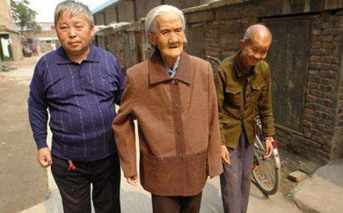

老岳母看着站在一旁的白发女婿，擦着眼泪说：“这个家啊，就像是扁担上立着一个鸡蛋，没有他早就碎了。”
在河南省焦煤集团鑫珠春公司的西沟家属区，一套简陋楼房里住着这户特殊的矿工
今年54岁的谢延信原名刘延信，原是河南滑县农民。32年前，新婚一年的妻子谢兰娥生下女儿40天后，因产后风离开人世，留给他的是这样一家人：岳母因患有肺气肿等疾病、基本没有劳动能力，唯一的内弟又先天呆傻，
然而，不幸并没有放过谢延信。1979年春，岳父突然得了中风，虽经抢救脱离了生命危险，但从此在床上一躺就是近18年。为了方便给岳父
在岳父与床做伴的18年里，他每天坚持给岳父翻身、擦爽身粉，每天背老人到室外晒一次太阳，往老人住的9平米小屋里洒一次花露水；岳父大小便失禁，他每天要洗一大盆沾满屎尿的衣服、床单；因肝硬化引起双腿浮肿，他每天用热水给老人烫脚、按摩。为给岳父治病，他依照偏方挖过毛草根、逮过蟾蜍；怕老人寂寞，1983年他在刚参加工作的第一个月，就花费半个月的工资为岳父买了一部收音机，还陪岳父跟着收音机唱豫剧，岳父喜爱听武侠小说，他就经常给岳父读小说。即使如此，有时候岳父心情不好，还对他无端发火，他总是一笑而过。1987年就认识谢延信的老邻居赵国堂说：“18年啊，老人没得过褥疮，没穿过一件尿湿的衣裤，这是一般人难以做到的。”
1996年8月，岳父临终前，谢延信再次庄重承诺：只要自己有饭吃，就不会让岳母和内弟饿着；岳母百年后，让内弟跟着自己上班，退休了让内弟跟自己回老家，决不上内弟受委曲。和他年纪差不多的内弟经常走失，谢延信总是不厌其烦到处寻找，从来没有过一句怨言。呆傻的内弟有时把别人家的小孩子吓得直哭，他赶紧去给别人道歉。
如今，已近82岁的老岳母身体比从前好多了，而谢延信的身体却每况愈下。1990 年，谢延信患了严重的高血压病，为了省钱，听说醋泡花生能降血压，他连吃了13年，直到2003年因脑出血才不得不住院抢救。记者采访时，老岳母充满怜爱地看着满头白发的女婿说：“这个家啊，就像是扁担上立着一个鸡蛋，没有他早就碎了。”她说自己脾气不好，有时会吵他两句，可女婿总是笑笑就算，“从来不惹我
有人问谢延信三十多年照顾岳父母一家亏不亏？他说：“照顾自己父母的事有啥亏不亏的。” 邻居吕国臣说：“谢延信这样的女婿天下难找，要不是他，他老岳父这一家三口也活不到现在。”
继母谢粉香：他是个好女婿 我做个好续闺女前妻去世后，曾有不少人给谢延信介绍对象，他从不隐讳地公开了一个条件：结婚后决不丢下这些亲人。对方一听他的家境，要么不理解，要么嫌负担重，都退却了。直到1984年，同村的农家女谢粉香一句“有难我们同当，有苦我们同吃”，使他俩走在了一起。从此，谢延信在焦作上班伺候岳父母，妻子则在老家担当起抚养女儿、种地的担子。
“当时我听说老谢对岳父一家人那么好，人太实在了，就决心嫁给他，不图好吃好喝，就图他这个人心眼好，能吃苦。”谢粉香说他们结婚到现在22年了，可真正在一起的时间并不多。为了让老谢安心照顾好岳父母，她在老家一人带着四个孩子，负责照顾双方的四位老人，尽量不让他操心，每年还要几次赶到焦作帮助老人拆洗棉衣被褥。
“老谢是个好女婿，我就当个好续闺女，决不影响他的名声。”自2003年谢延信因脑出血，同样善良的谢粉香更多地承担起了伺候老人的责任，从患病的丈夫手里接过
32岁的女儿刘变英和父亲在一起生活的时间加起来还不到7年。为了能尽早帮上家里的忙，她只上了小学四年级就辍学回家开始干农活了。说起父亲，她的评价是“俺爸太难了，一般人做不到这样。”她至今记得，当年为了省钱，爸爸硬是骑自行车从焦作回到了滑县，到了家，人都动不了了，把奶奶心疼得直哭。她告诉记者，她跟周围的人说起爸爸的事儿，人家都不信：哪可能有这样的人呢！
“刚结婚，俺爸就给我们上了一课：把婆家分给我们的三间房子腾出两间，让给弟弟妹妹们住，要求我们千万不能惹老人生气。” 女儿刘变英回忆。
1994年农历腊月廿二她结婚的前一天，父亲从焦作赶回到了老家，把她叫到跟前说：“ 妮，好女不争嫁妆衣。你结婚，没有啥送你的，给你一本织毛衣书，里面有我抄的两段话，以后经常看看。”这本没有封皮的书，在第一页上写着“
这本书是父亲在旧书地摊上花1元钱买的，因为女儿爱织毛衣。刘变英说，我把这本书当成了传家宝，放在枕头下面，没事经常看看。她的婆婆家有5个孩子，长年在外地打工，公婆的地这么多年来都是她帮助种的。
传统美德的感召力在新时期依然巨大 一座上个世纪80年代建造的居民楼里一套45平米的房子里，昏暗得大白天还得开着灯泡，除了几张床和一台二手14吋彩电，看不
据焦煤集团鑫珠春公司总经理谢长明介绍，谢延信1983年参加工作后在朱村矿掘二区当了一名掘进工，工作环境艰苦，但他从没有因家庭拖累而影响工作。在井下工作8年里，他像一台不知疲倦的永动机，每年出勤都在300个工以上。1990 年他患了高血压后，组织上调他到井上瓦斯泵房工作，工友评价：“他就像是颗螺丝，只要把他拧紧了，就永远不会松动。”这么多年来，他没有脱过一次岗，发生过一次事故，机电设备完好率年年都在90％以上。
尽管家里经济困难，但他总是自己默默承受，从不把自己的困难向别人诉说。组织上和各级领导来家里慰问，他也没有向公司诉过苦，更没有向组织要过救济。有人说他傻，他却说：“组织上年年来看望俺，俺知足了，咋还能再给组织找麻烦呢？”记者到他家里采访，善良的一家人没有更多地抱怨生活的艰难，而是不住地表达着对组织和周围群众的感激。一家人指着还没有拆封的电视机和洗衣机介绍，这都是上面领导来慰问送的。谢粉香说，这些年矿上不少职工都下岗了，可还是让他留下了。2003年老谢因病退养，工资只有300多元，矿上就照顾他去瓦斯泵房看设备，每月给400元。
“谢延信是我们的好邻居，从他身上我们看到了中华民族尊老爱幼的传统美德”。32年来，谢延信的事迹深深感动着周围的百姓，一说起孝敬老人，就要和谢延信比较，教育孩子也拿他做榜样。鑫珠春公司西苑社区党支部书记李兰英说：“谢延信的孝心感染了西苑社区，在社区中形成了尊老爱幼和互帮互爱的良好社会风气。”记者前去老谢的家里采访时，周围邻居都纷纷提出，应该好好宣传一下谢延信，让更多的人知道他，向他学习。
一位网民说，在物欲横流的今天，老谢为我们上了一堂生动的